Vá Hệ bố cục — mỗi mục của Hôm nay ở cột thứ hai mở đúng chỗ của nó, mục chưa có chỗ thì báo rõ, không mục nào bấm mà không phản hồi
Vì sao làm
Hàng 91 (he-bo-cuc) cho nhà Hôm nay một cột thứ hai liệt năm hàng đợi của bộ nhóm mặc định, mỗi mục trỏ /today#<mã nhóm> mà màn Hôm nay không có chỗ nào mang mã ấy: bấm không phản hồi, mục không bao giờ sáng. Chủ kho chọn «mở hợp đồng mới» ở Cổng Bằng chứng hàng 91 (Ngoài-6). Hàng này cho mục mở đúng nhóm trên Hôm nay theo đường mở lead đã có của hàng 26, và báo một dòng khi mục không có chỗ.
Đã hứa
- AC-1 — Given đầu chủ có việc ở một nhóm đang gập, When bấm mục của nhóm ấy ở cột thứ hai, Then địa chỉ thành
- AC-2 — Given cột thứ hai của Hôm nay, When địa chỉ là `/today?nhom=<mã>`, Then đúng một mục mang `aria-current="page"` —
- AC-3 — Given đầu chủ và một nhóm không có việc hôm nay, When mở `/today?nhom=<mã nhóm ấy>`, Then màn hiện đúng một dòng
- AC-4 — Given người không có vai Đầu chủ (chỉ Telesales, hay chỉ Trưởng nhóm), Then theo lối người chọn ở dòng sổ Hỏi-1
- AC-5 — Given tham số `nhom` sai khuôn mã nhóm của lõi (rỗng, chữ hoa, dấu, quá 40 ký tự), When mở Hôm nay, Then màn như
- AC-6 — Given địa chỉ có cả `lead=<id>` và `nhom=<mã>`, When mở Hôm nay, Then đường mở lead của hàng 26 chạy như cũ (mở
- AC-7 — Given các tệp giao diện hàng này chạm, When chạy lint của kho và sàn thiết kế, Then mức nợ giao diện giữ 0, không
Thiết kế
docs/superpowers/specs/2026-11-02-va-he-bo-cuc-design.md
Quyết định
- 2026-11-02 · Máy · approach · S1 — Đã tra tri thức: Vá Hệ bố cục: mỗi mục của Hôm nay ở cột thứ hai mở đúng chỗ của nó, mục chưa có màn thì ẩn hay báo rõ, không mục nào bấm mà không phản hồiKho đã khai tri_thuc — bước thiết kế tra trang trước khi chọn.
- 2026-11-02 · Máy · approach · S1 — Mục nhóm ở cột thứ hai trỏ /today?nhom=<mã>; Hôm nay mở nhóm ấy, chọn dòng nhóm và cuộn tới — theo đúng đường mở lead từ thông báo của hàng 26; không lọc lưới, không giữ #<mã>.Đường mở một thứ trên Hôm nay đã có khuôn ở mo-lead.ts (mở nhóm, chọn dòng, cuộn); lọc lưới làm mất cái nhìn cả ngày, #<mã> không mở được nhóm đang gập (AC-1, E1, E6u).
- 2026-11-02 · Máy · approach · S1 — Mục không có chỗ (nhóm không việc, mã không có trong bộ nhóm, người không có Hôm nay đầu chủ) thì báo rõ một dòng bằng khuôn TrangThai notice, không ẩn mục theo vai.Câu giao cho chọn ẩn hay báo rõ; Hôm nay đã báo một dòng khi lead không còn (mo-lead.ts), và vỏ không rẽ nhánh theo tên vai (app-shell.tsx) nên ẩn theo vai phải sửa bảng điều hướng của lõi (AC-3, AC-4, AC-5).
- 2026-11-02 · Máy · descope · S1 — KHÔNG làm bộ nhóm riêng của sàn và số đếm theo nhóm ở cột thứ hai — để hàng 42; cột giữ bộ nhóm mặc định, mã lạ hay nhóm sàn tắt thì báo một dòng.Mã đã ghi sẵn phần ấy cho hàng 42; hàng này chỉ vá hành vi bấm (Out of scope).
- 2026-11-02 · Máy · descope · S1 — bỏ design-pass — hàng không thêm khuôn, khối hay bố cục; chỉ đổi địa chỉ mục, trạng thái chọn và một dòng báo dùng khuôn TrangThai đã có; mắt người nhìn ở S4 bằng E6u, E7u.Không ô nào chưa có khuôn nên bước phân kỳ ba lối không mở; hình đã có trên màn đang chạy của hàng 22, 26, 91.
- 2026-11-02 · Máy · descope · S1 — bỏ coverage-scan — không gian AC nhỏ, bốn trục quét tay ở mục Coverage của hợp đồng; đổi lại không có bằng chứng độ phủ của bộ quét hình thái.Hàng vá một hành vi trên một cột của một màn; trục nhóm, chỗ, vai, tham số, khổ liệt hết bằng tay.
- 2026-11-02 · Máy · approach · S1 — Hỏi-1 — người không có vai Đầu chủ (chỉ Telesales, chỉ Trưởng nhóm) thấy gì ở năm mục Hôm nay của cột thứ hai. Khuyến nghị: giữ năm mục, bấm thì Hôm nay báo một dòng «Hàng đợi «<nhãn>» chỉ có ở Hôm nay của đầu chủ».Phản biện context sạch P0: câu giao để người chọn «ẩn hay báo rõ»; dòng d-20261102T083209Z-3 ghi nhầm là máy quyết.
- 2026-11-02 · Người (Manh Phan) · approach · gate1 — Hỏi-1 = báo rõ: người không có vai Đầu chủ vẫn thấy năm mục Hôm nay ở cột thứ hai; bấm thì Hôm nay báo một dòng «Hàng đợi «<nhãn>» chỉ có ở Hôm nay của đầu chủ».người chọn ở Cổng Phạm vi: duyệt (nhận khuyến nghị của dòng d-20261102T083503Z-7).
- 2026-11-02 · Người · seal · gate1 —
- 2026-11-02 · Máy · fix · S3 — Telesales chỉ có một nhà nên vỏ không có cột thứ hai: AC-4 với telesales đo bằng mở thẳng /today?nhom=<mã>, không bằng bấm mục; E7u rẽ theo có cột hay không.Nhìn màn thật trên máy dev dãy H: telesales@ không có cột thứ hai, trưởng nhóm có năm mục; hợp đồng viết «cột vẫn liệt năm mục» cho cả hai vai (AC-4, E7u).
- 2026-11-02 · Máy · fix · S4-r1 — Ghi danh hai chỗ dùng khuôn TrangThai mới (dòng báo nhóm ở Hôm nay của đầu chủ, dòng báo người không có vai Đầu chủ ở trang Hôm nay) vào bảng viết tay của bộ kiểm khuôn, tổng trang-thai 47 → 49; không đổi luật.S4 r1 REJECT chỉ vì suite ui-lint (ban-do-khuon.test.mjs, ca E4/E5 của bộ kiểm khuôn) — mọi eval của hàng đạt; giám sát cho chạm tệp ở yêu cầu H-14.
- 2026-11-02 · Máy · revisit · gate2 — Ngoài-1: ghi Known limitsmáy tự định tuyến theo đề xuất S4 «known-limits» — kho bật feature_loop.ngoai_n_tu_dinh_tuyen
- 2026-11-02 · Máy · revisit · gate2 — Ngoài-2: ghi Known limitsmáy tự định tuyến theo đề xuất S4 «known-limits» — kho bật feature_loop.ngoai_n_tu_dinh_tuyen
- 2026-11-02 · Máy · revisit · gate2 — Ngoài-3: ghi Known limitsmáy tự định tuyến theo đề xuất S4 «known-limits» — kho bật feature_loop.ngoai_n_tu_dinh_tuyen
- 2026-11-02 · Máy · fix · S4-r2 — Hạ hồ sơ từ máy thông về đã chấm và mời người ký Cổng Bằng chứng.pre-merge-check.sh của kit v2.36.0 không đọc được mục Known limits (fail-closed) nên chặn mọi hồ sơ machine-cleared — cùng lỗi kit đã gặp ở va-thong-bao-lead và va-san-sang-ban.
- 2026-11-02 · Máy · fix · S4-r2 — Gộp nhánh chính (PR #83, #85) sau lượt chấm r2 chạm hom-nay-dau-chu.tsx — ghim lại bằng làn máy (repin-20261102T095347Z-26379) rồi chấm vòng 3 thu hẹp cho ba bài nhìn màn E6u, E10u, E7u.Làn ghim lại báo evals_not_machine_touched = E6u, E10u, E7u: bản sửa của dãy G trên cùng tệp Hôm nay đầu chủ đã vào sau khi ba bài ấy chấm; luật kit đòi vòng S4 delta, không chỉ ghim.
- 2026-11-02 · Máy · revisit · gate2 — Ngoài-1: ghi Known limitsmáy tự định tuyến theo đề xuất S4 «known-limits» — kho bật feature_loop.ngoai_n_tu_dinh_tuyen
- 2026-11-02 · Máy · revisit · gate2 — Ngoài-2: ghi Known limitsmáy tự định tuyến theo đề xuất S4 «known-limits» — kho bật feature_loop.ngoai_n_tu_dinh_tuyen
- 2026-11-02 · Máy · revisit · gate2 — Ngoài-3: ghi Known limitsmáy tự định tuyến theo đề xuất S4 «known-limits» — kho bật feature_loop.ngoai_n_tu_dinh_tuyen
Bằng chứng
Các eval
| Eval | Tiêu chí | Loại | Verdict | run_id | verified_at |
|---|---|---|---|---|---|
| E1 | AC-1 | test | PASS | minted-va-he-bo-cuc-E1-r1 | 2026-11-02T09:25:59Z |
| E2 | AC-2 | test | PASS | minted-va-he-bo-cuc-E2-r1 | 2026-11-02T09:25:59Z |
| E3 | AC-5 | test | PASS | minted-va-he-bo-cuc-E3-r1 | 2026-11-02T09:25:59Z |
| E4 | AC-6 | test | PASS | minted-va-he-bo-cuc-E4-r1 | 2026-11-02T09:25:59Z |
| E5 | AC-4 | test | PASS | minted-va-he-bo-cuc-E5-r1 | 2026-11-02T09:25:59Z |
| E11 | AC-3 | test | PASS | minted-va-he-bo-cuc-E11-r1 | 2026-11-02T09:25:59Z |
| E6u | AC-1 | ui-check | PASS | minted-va-he-bo-cuc-E6u-r3 | 2026-11-02T09:59:13Z |
| E10u | AC-3 | ui-check | PASS | minted-va-he-bo-cuc-E10u-r3 | 2026-11-02T09:59:13Z |
| E7u | AC-4 | ui-check | PASS | minted-va-he-bo-cuc-E7u-r3 | 2026-11-02T09:59:13Z |
| E8 | AC-7 | script | PASS | minted-va-he-bo-cuc-E8-r3 | 2026-11-02T09:59:13Z |
| E9 | AC-7 | script | PASS | minted-va-he-bo-cuc-E9-r3 | 2026-11-02T09:59:13Z |
Chi tiết từng eval
PASS E1 · test
AC-1: Given đầu chủ có việc ở một nhóm đang gập, When bấm mục của nhóm ấy ở cột thứ hai, Then địa chỉ thành
PASS E2 · test
AC-2: Given cột thứ hai của Hôm nay, When địa chỉ là `/today?nhom=<mã>`, Then đúng một mục mang `aria-current="page"` —
PASS E3 · test
AC-5: Given tham số `nhom` sai khuôn mã nhóm của lõi (rỗng, chữ hoa, dấu, quá 40 ký tự), When mở Hôm nay, Then màn như
PASS E4 · test
AC-6: Given địa chỉ có cả `lead=<id>` và `nhom=<mã>`, When mở Hôm nay, Then đường mở lead của hàng 26 chạy như cũ (mở
PASS E5 · test
AC-4: Given người không có vai Đầu chủ (chỉ Telesales, hay chỉ Trưởng nhóm), Then theo lối người chọn ở dòng sổ Hỏi-1
PASS E11 · test
AC-3: Given đầu chủ và một nhóm không có việc hôm nay, When mở `/today?nhom=<mã nhóm ấy>`, Then màn hiện đúng một dòng
PASS E6u · ui-check
AC-1: Given đầu chủ có việc ở một nhóm đang gập, When bấm mục của nhóm ấy ở cột thứ hai, Then địa chỉ thành

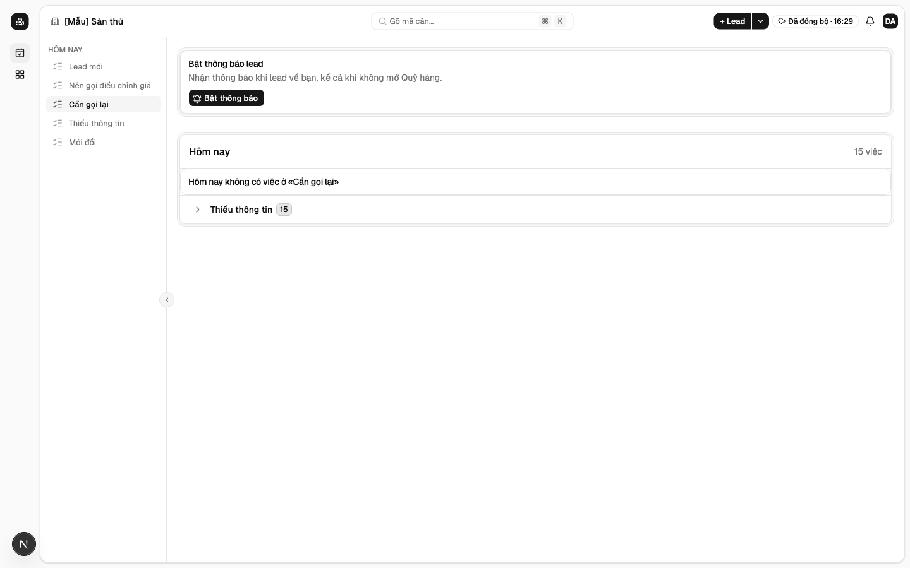

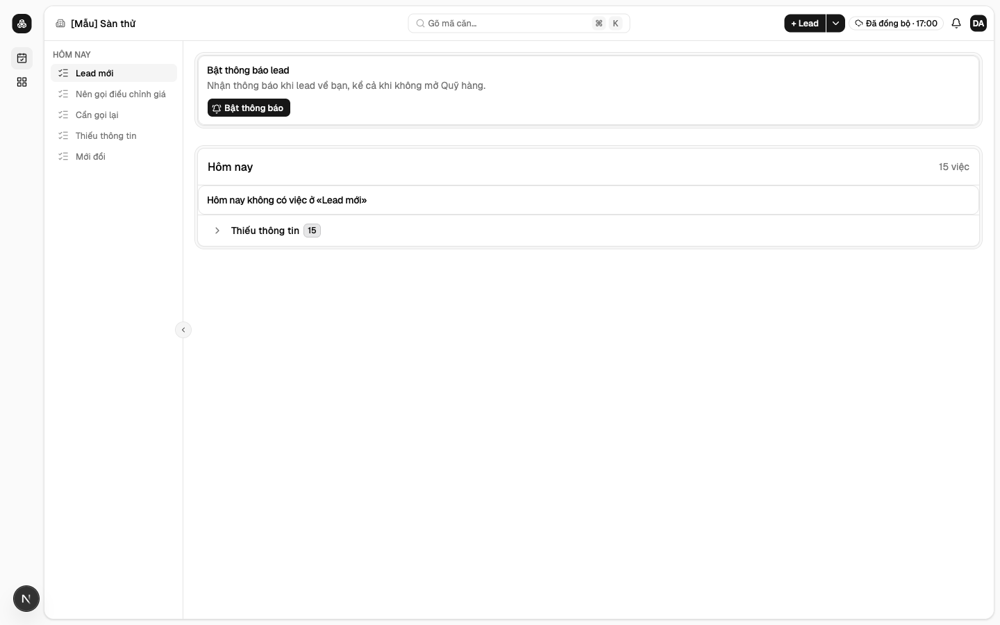
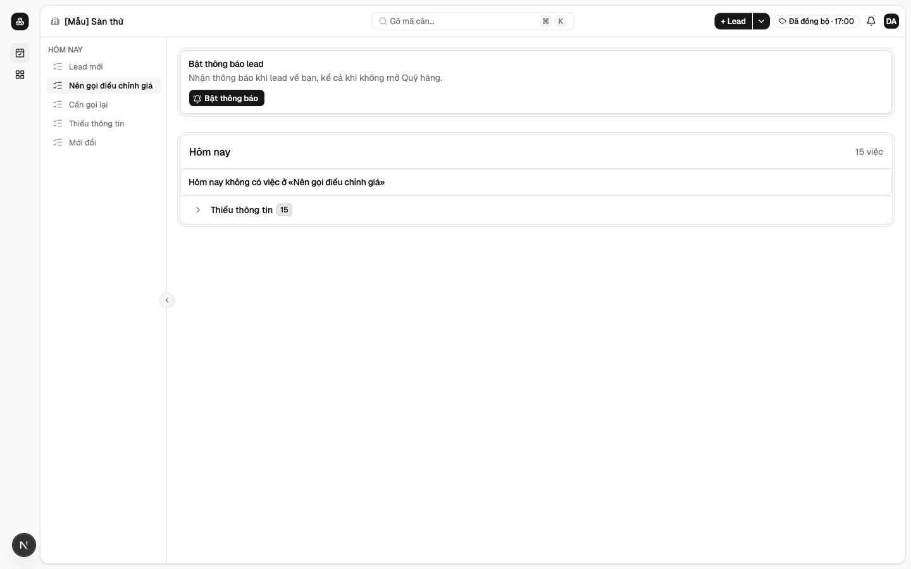
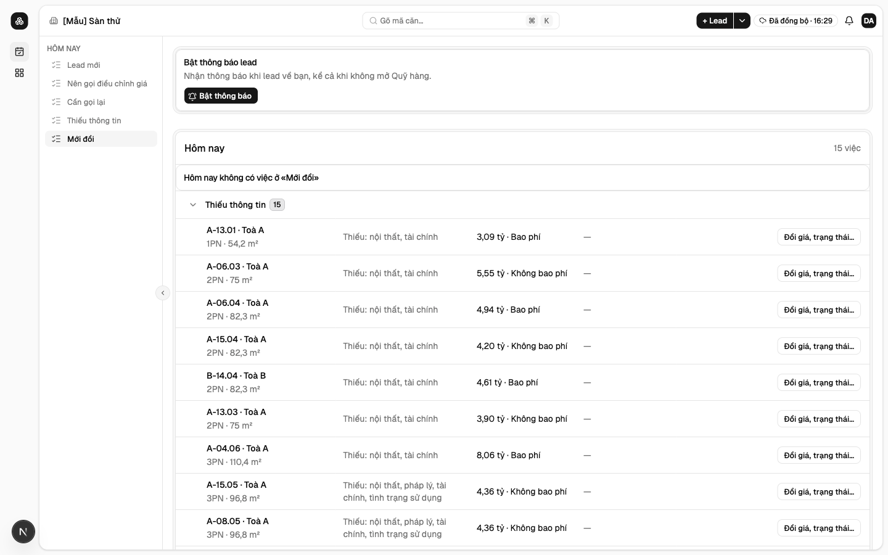

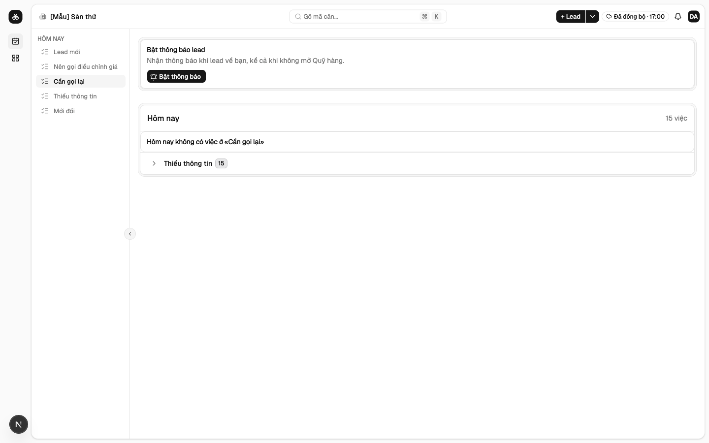

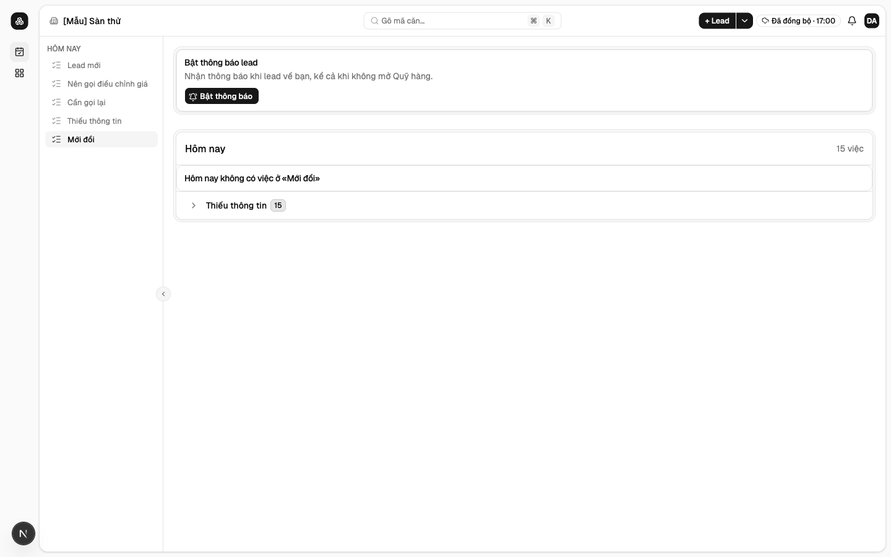

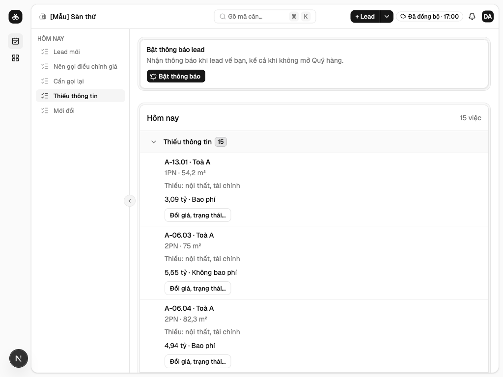
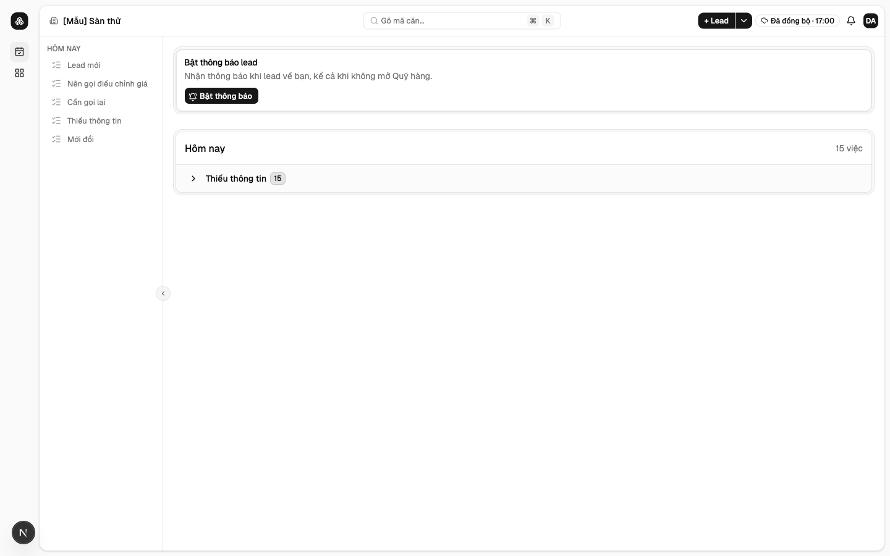
PASS E10u · ui-check
AC-3: Given đầu chủ và một nhóm không có việc hôm nay, When mở `/today?nhom=<mã nhóm ấy>`, Then màn hiện đúng một dòng

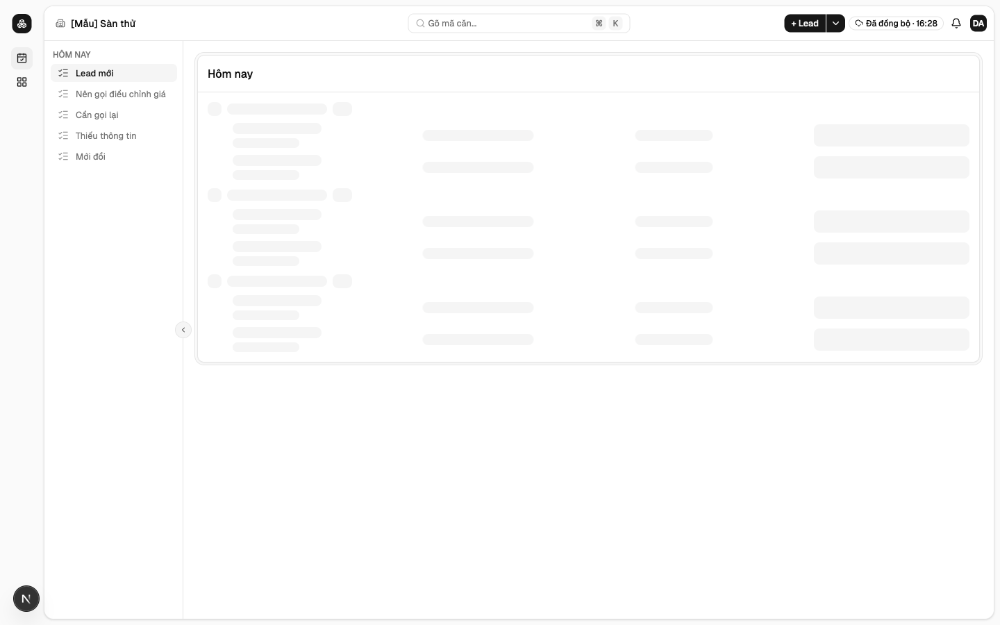

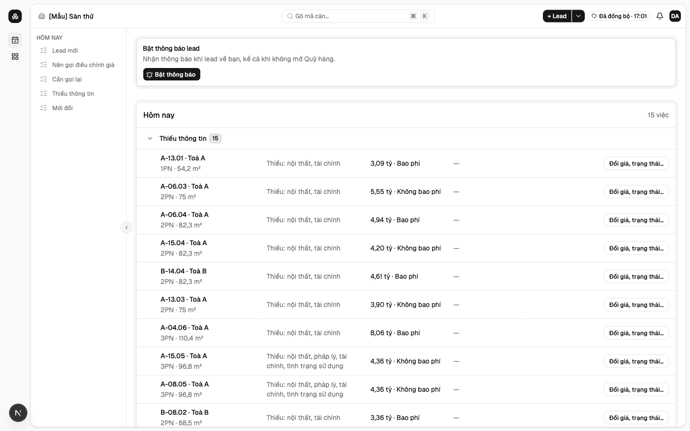

PASS E7u · ui-check
AC-4: Given người không có vai Đầu chủ (chỉ Telesales, hay chỉ Trưởng nhóm), Then theo lối người chọn ở dòng sổ Hỏi-1
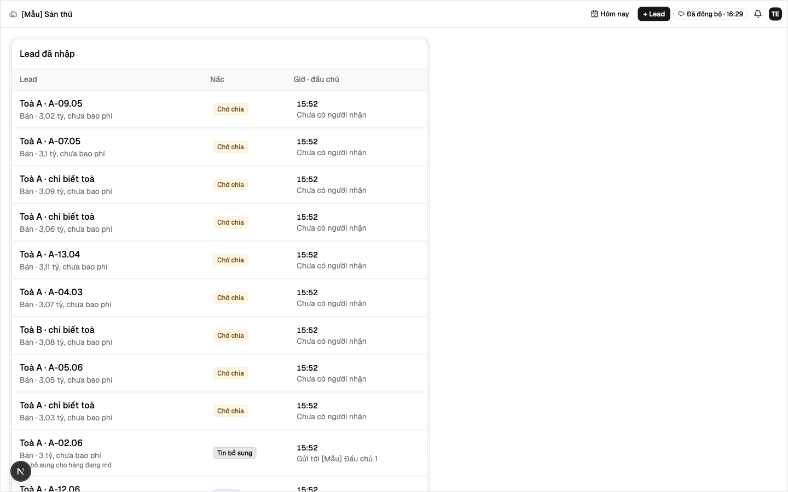

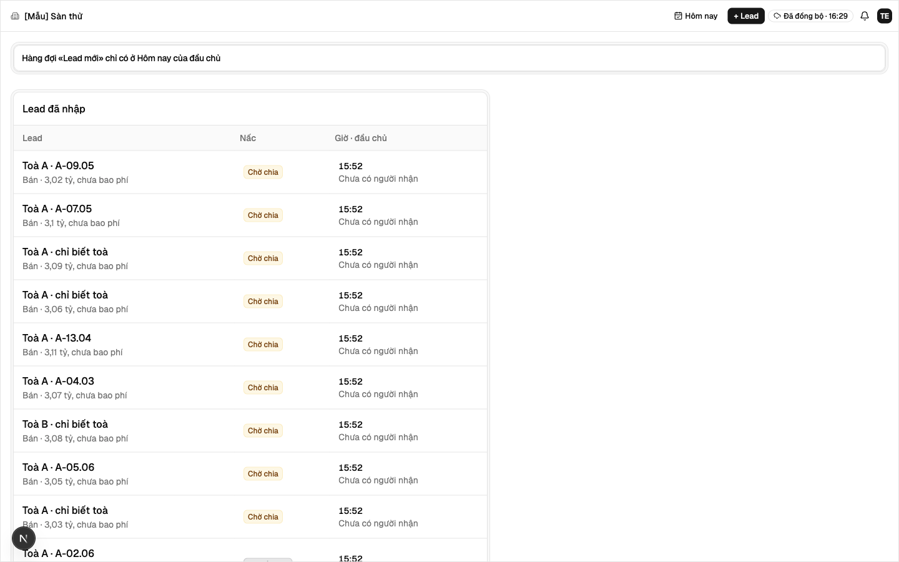
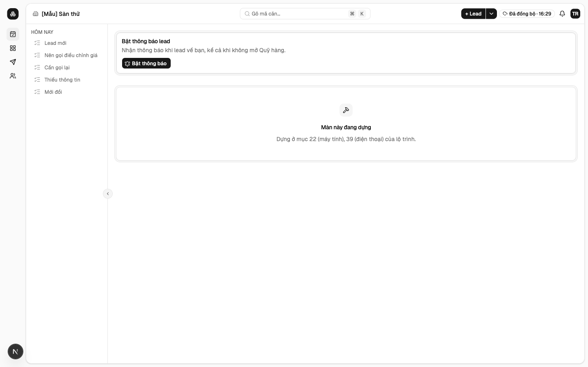
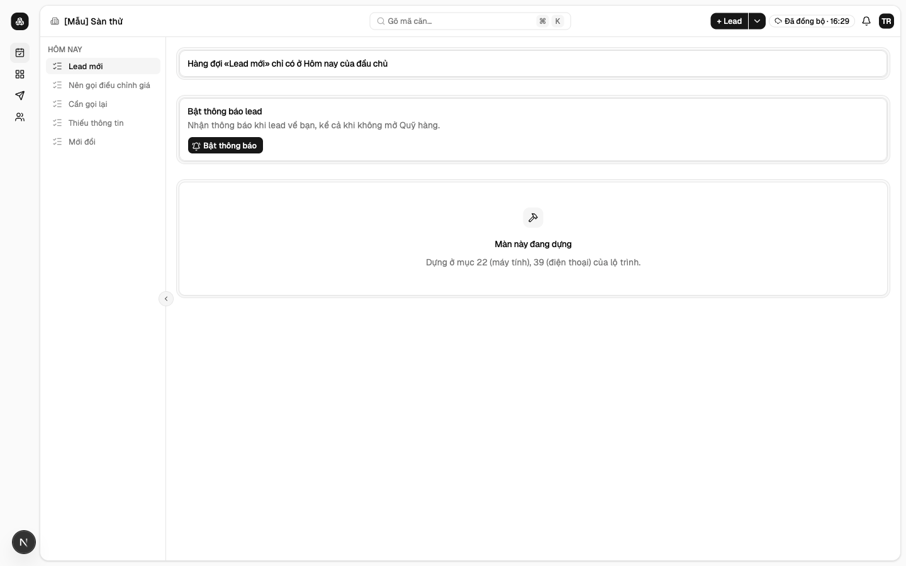
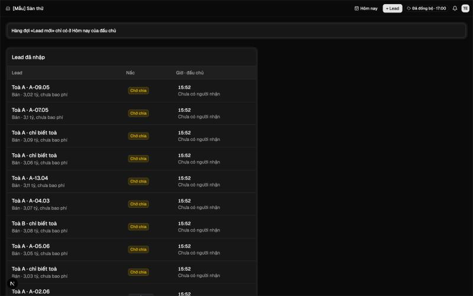
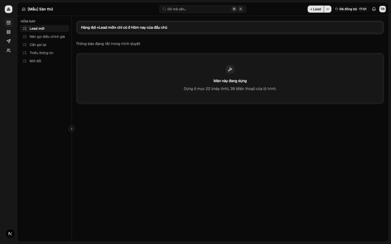

PASS E8 · script
AC-7: Given các tệp giao diện hàng này chạm, When chạy lint của kho và sàn thiết kế, Then mức nợ giao diện giữ 0, không
chuẩn giao diện: đạt
PASS E9 · script
AC-7: Given các tệp giao diện hàng này chạm, When chạy lint của kho và sàn thiết kế, Then mức nợ giao diện giữ 0, không
Eval không phân biệt (Analyst)
Vòng verify
- Round 1: lệnh suite ui-lint đỏ nên vòng chưa qua; mười một eval E1–E11 đều đạt, run_id hậu tố r1.
- Round 2: delta không chạm paths của các eval nên mang sang (carried_from_round: 1); bảy lệnh suite chạy lại, tất cả xanh.
- Round 3: sau gộp main PR #83, #85 chạy lại E6u, E10u, E7u (bài nhìn màn), E8, E9 và sáu lệnh suite, tất cả đạt; E1, E2, E3, E4, E5, E11 mang sang từ round 1. Mốc verified_at của round 3 lấy theo giờ commit 1b21604 vì lần chạy không cấp giờ riêng.
- run_id: repin-20261102T095347Z-26379
- sha: 0fe6f9689aa18df6686dcfa036a28883f2aa7970 · suites: 7 lệnh đạt · evals: 8/8 eval máy đạt kỳ vọng · ngoài làn máy: E6u, E10u, E7u · diff chạm vật đo ngoài làn máy: E6u, E10u, E7u — đã chứng lại ở round 3 bằng bài nhìn màn.
Tài nguyên
| Khối | Tác tử | Token đầu ra |
|---|---|---|
| S4 round 1 | 19 | 93.139 |
| S4 round 2 | 12 | 23.621 |
| S4 round 3 | 17 | 79.440 |
3 lượt chấm · tổng 196.200 token
Giới hạn và ngoài hợp đồng
- Bộ nhóm riêng của sàn và số đếm theo nhóm ở cột thứ hai — hàng 42.
- Mục ở cột thứ hai của các nhà khác (Đã gửi, Cài đặt sàn, Đội).
- Hôm nay của trưởng nhóm — hàng 42.
- Điện thoại (375): không có cột thứ hai.
- Giữ cột hồ sơ đang mở khi bấm mục nhóm — mục là liên kết tới `/today?nhom=<mã>`, cột hồ sơ đóng như khi vào Hôm nay.
Giao
chưa ghi quan sát production